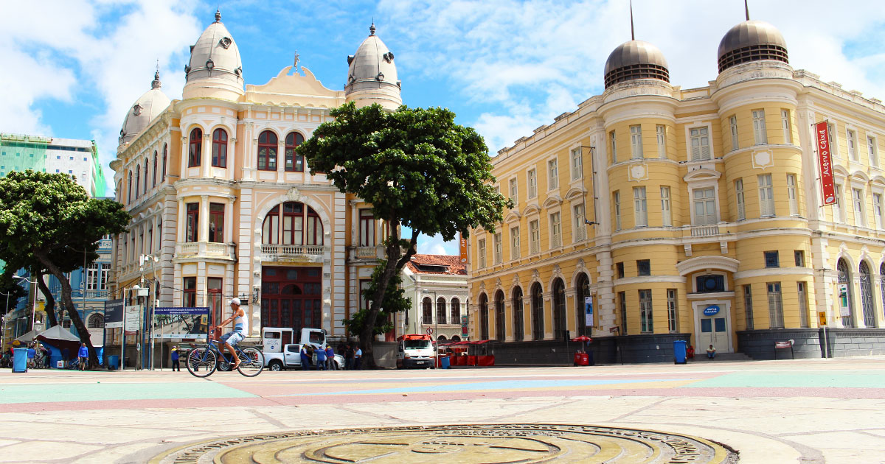
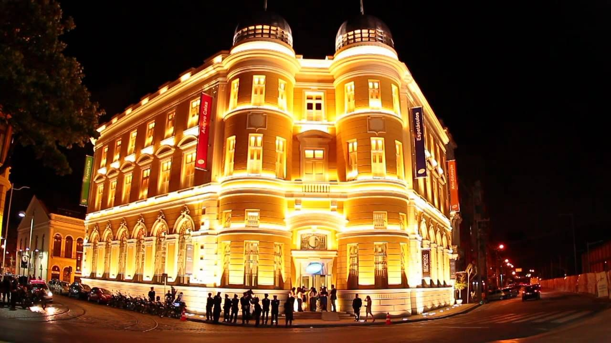
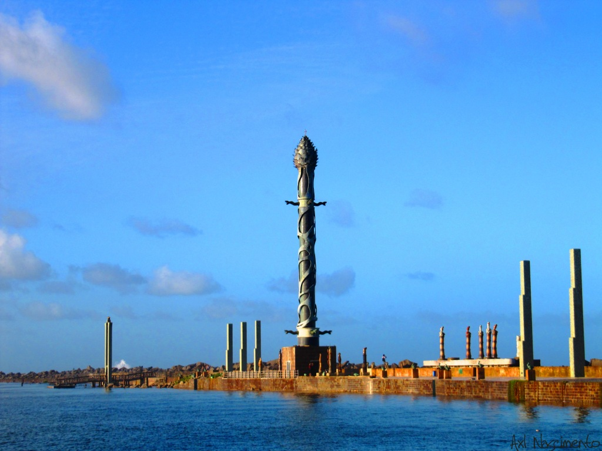
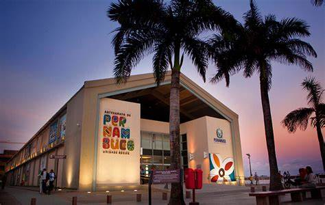

Onde fica o Marco Zero
O Marco Zero em Recife é um dos destinos históricos mais importantes do nordeste do país. A região reúne atrações históricas e culturais, centro de artesanato e ótimos restaurantes. Além disso, é o principal local do carnaval de Pernambuco, reunindo música, alegria e muita festa. A seguir, saiba mais detalhes sobre o destino. O Marco Zero compreende a região da Praça Barão do Rio Branco, que está situada no município de Recife, no estado de Pernambuco. A atração fica próxima do bairro do Recife Antigo, e está a menos de 10 km de Olinda.
Como chegar
Existem muitas formas de chegar ao Marco Zero, uma vez que o local está situado na região Metropolitana de Recife. De carro, basta partir do centro de Recife, através da Rua Riachuelo. O trajeto é curto e dura aproximadamente 20 minutos. Também é possível ir de ônibus, as principais são a 1973, 1992, 1994, 2441, 346, 521 e 642. Além disso, utilizar aplicativos de corrida são ótimas alternativas para andar na cidade. Por fim, você ainda pode contratar agências de turismo. Assim, é possível aproveitar melhor a região e explorar outras atrações locais.
Como visitar o Marco Zero
Antes de conhecer as atrações que cercam o Marco Zero, aproveite também para ficar por dentro de dicas e informações essenciais sobre o local. Assim, é possível planejar melhor a viagem e aproveitar a atração com segurança: PUBLICIDADE Quando ir: entre os meses de setembro e fevereiro, pois a época oferece um clima agradável e com menor probabilidade de chuva. Melhor horário para ir: escolha passear pela região durante a manhã. Neste período o número de visitantes é menor e as temperaturas estão mais amenas. Estacionamento: há boas opções de estacionamento nas proximidades do Marco Zero. Você pode estacionar na Praça do Arsenal ou no shopping Paço Alfândega. Estrutura: a região conta com um comércio forte, que reúne excelentes bares, restaurantes e cafeterias. Além disso, o local possui diferentes opções de hospedagens. Como visitar: há várias atrações no Marco Zero, então é importante reservar pelo menos 1 dia para aproveitar as atividades da região. O ideal é montar um roteiro para organizar todas elas. E para curtir todas as suas atrações, acompanhe o próximo tópico, que traz ótimas dicas de passeios no local.
O que fazer no marco Zero
A região do Marco Zero em Recife é cheio de atrações culturais, monumentos históricos e ótimos restaurantes. Além disso, o local abriga um dos carnavais mais animados do nordeste. A seguir, confira sugestões de programas para a sua viagem:
1. Praça do Marco Zero
Também chamada de praça Barão do Rio Branco, o local é considerado um dos destinos mais visitados de Recife. A atração é cercada por construções e prédios históricos, como o antigo edifício London River Plate Bank e a Associação Comercial de Pernambuco. Lá também está situada a pintura da rosa-dos-ventos, que marca o km 0 zero de Recife.
2. Edificio da caixa cultural
Localizada a poucos metros da Praça do Marco Zero, o edifício Caixa Cultural também valoriza a história local. Construído em 1912, o espaço funcionou durante muito tempo como a Bolsa de Valores de Pernambuco. Atualmente é palco de diversas exposições que valorizam a música, o teatro e outras manifestações culturais. O espaço está aberto para visitação de terça a domingo, das 10h às 18h. A entrada é gratuita.
3. Parque das esculturas – Francisco Brennand
O Parque das Esculturas homenageia o artista pernambucano Francisco Brennand, pois destaca as suas principais obras no local. O atrativo reúne cerca de 90 esculturas, representadas em uma exposição ao ar livre. Entre as principais obras do autor se destaca a Torre de Cristal, com aproximadamente 32 metros de altura. Por fim, para chegar ao local é preciso alugar um barco a partir do Marco Zero ou ir de carro pela Avenida Brasília Teimosa. O passeio é gratuito.
4. Centro de Artesanato de Pernambuco
Com mais de 2 mil m², o Centro de Artesanato de Pernambuco permite um passeio pela cultura e tradições de Recife. Localizada em frente ao Marco Zero, a atração possui mais de 25 mil obras de artesãos locais do estado de Pernambuco. No acervo estão quadros, esculturas, cerâmicas e até cordéis, que valorizam a cultura nordestina. O atrativo está aberto para visitação de segunda a sábado, das 9h às 19h, e aos domingos, das 10h às 16h.